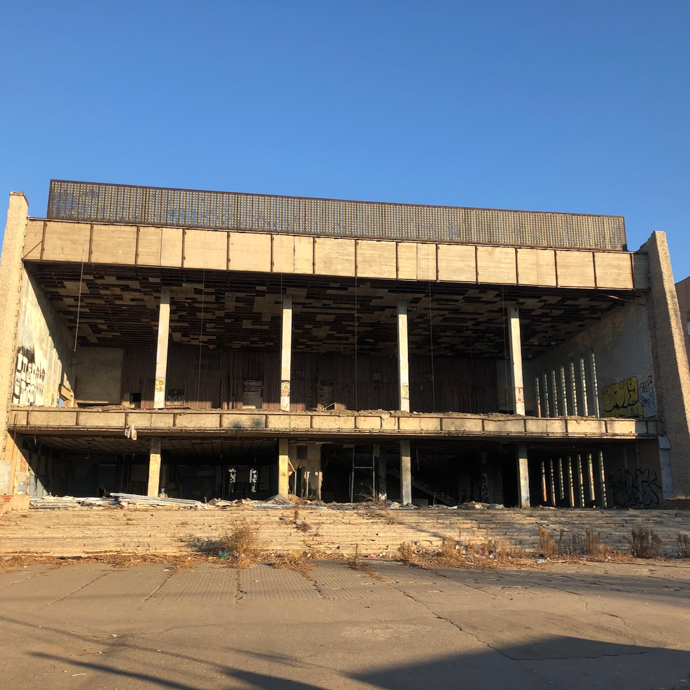
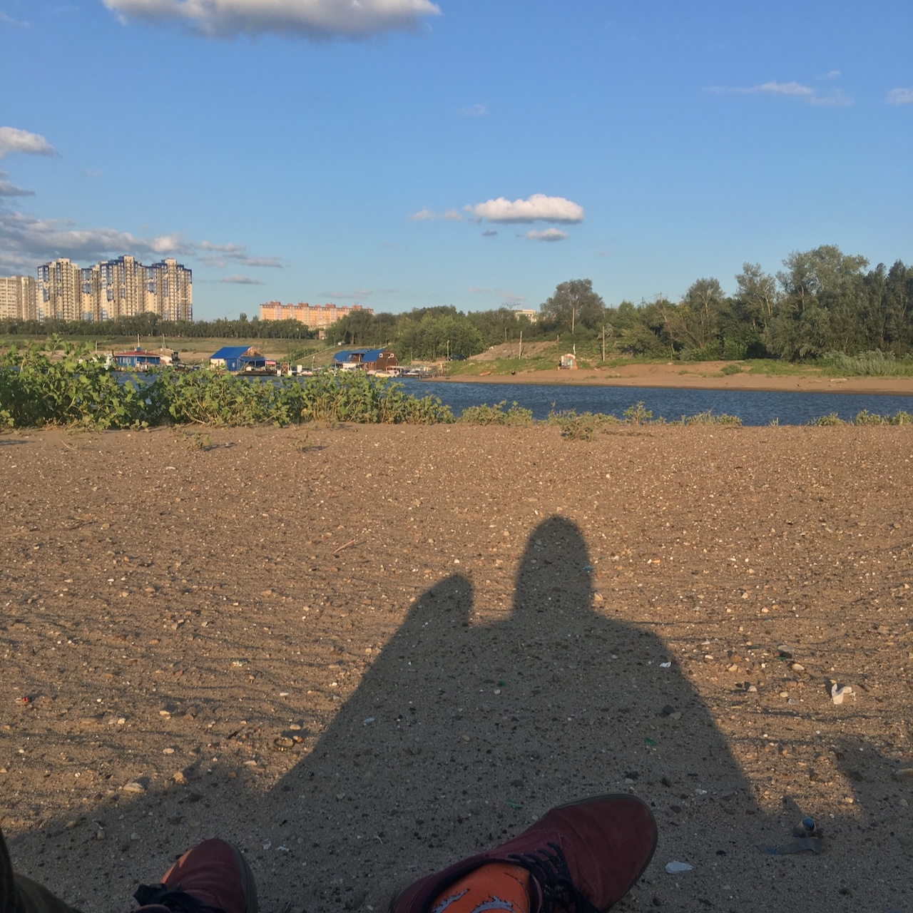

Top three activities to do at Kanatny

Embankment with a lighthouse view
Take a walk with a beautiful view of the lighthouse or take a boat ride and have a picnic next to it

It was a theatre
The Uybileinyi Theatre is a great place to spend time thinking about the frailty of existence and the transience of time.

Spend some time on the beach
The local beach is perfect for picnic, getting some tan, or just chilling out